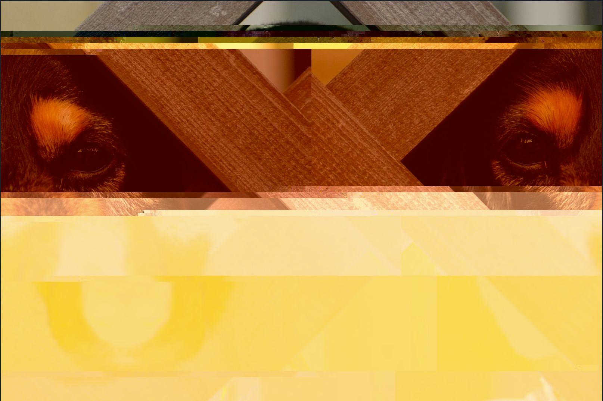
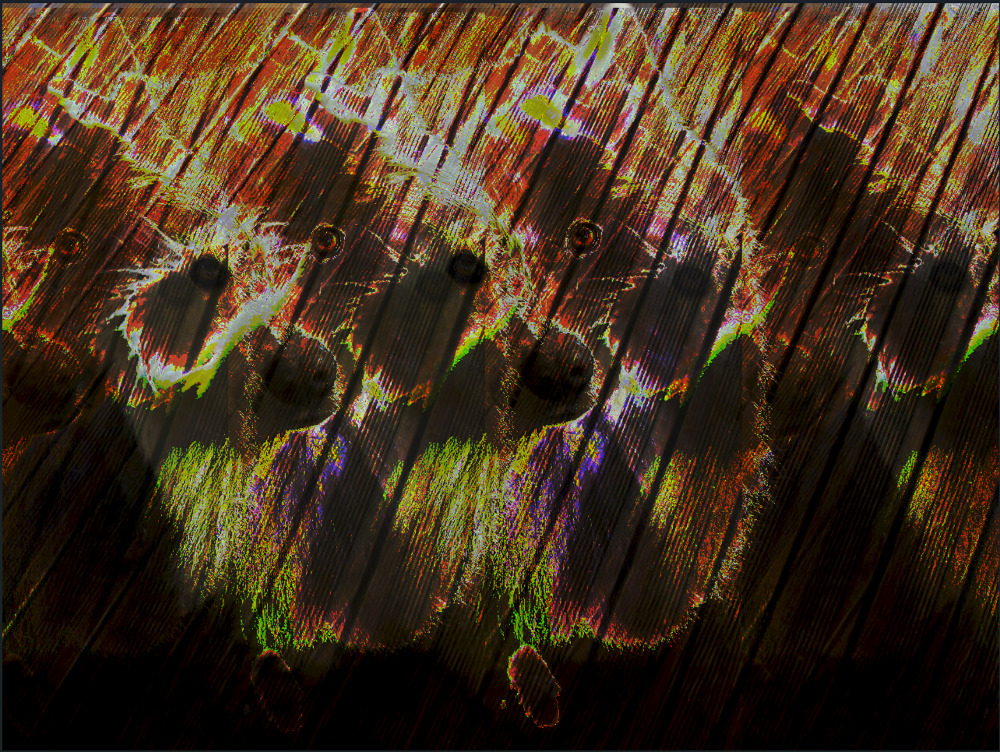

WSebastian's Portfolio
Glitch Art
|  |  |

|
| This is the glitch art I made. |
|---|
By using Notepad ++ for the first image and using a mix of Audacity and Photoshop, I was able to glitch three images of dogs. For the first image, I was randomly typing in text, copy and pasted some sections, putting random spaces, and threw a few rows of 0s. For the second image, I closely followed the tutorial in the module to see what the result was just by following. For the last image, in Audacity, I started randomly applying echoes at different speeds and in different sections of the audio. The images I chose to glitch are pictures of dogs. While I was sick and trying to think of what kind of images I wanted to use, dogs were what came to mind after a long brainstorming session. Because I chose an image of a dog for the first draft, I wanted to use just pictures of dogs to it consistent as a series of glitched images. I also thought that, since dogs are cute, what would it like if I corrupted it using the methods to glitch photos.